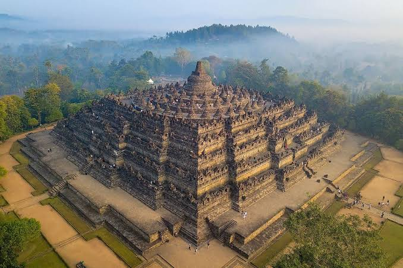
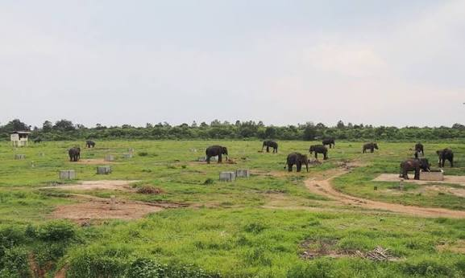

Jawa Tengah
Candi Borobudur
Candi Borobudur merupakan salah satu peninggalan sejarah terbesar di Indonesia. Candi ini terkenal dengan arsitektur Buddha dan relief bersejarahnya.

Papua Barat Daya
Raja Ampat
Raja Ampat terkenal dengan keindahan gugusan pulau, laut biru, dan kekayaan bawah laut yang menjadi daya tarik wisatawan.

Lampung
Taman Nasional Way Kambas
Taman nasional ini merupakan kawasan konservasi satwa liar, khususnya gajah Sumatra, serta memiliki hutan tropis yang menjadi habitat berbagai satwa.